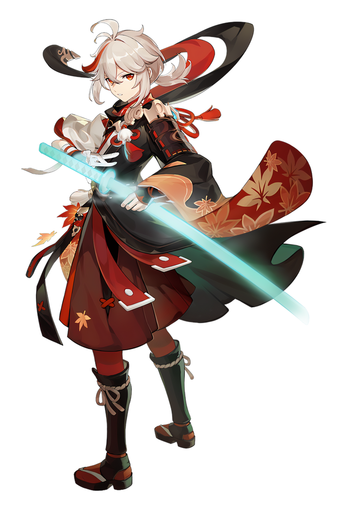

Anemo Character
Kaedehara Kazuha
A wandering samurai of the once-famed Kaedehara Clan with an ability to read the sounds of nature, Kazuha is a temporary crewmember of The Crux. Despite being burdened by the many happenings of his past, Kazuha still maintains an easygoing disposition.
Teaser Demo Karakter
